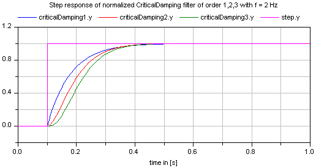
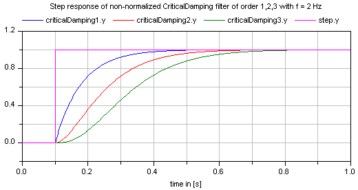

CriticalDampingOutput the input signal filtered with an n-th order filter with critical damping |
Information
This information is part of the Modelica Standard Library maintained by the Modelica Association.
This block defines the transfer function between the input u and the output y as an n-th order filter with critical damping characteristics and cut-off frequency f. It is implemented as a series of first order filters. This filter type is especially useful to filter the input of an inverse model, since the filter does not introduce any transients.
If parameter normalized = true (default), the filter is normalized such that the amplitude of the filter transfer function at the cut-off frequency f is 1/sqrt(2) (= 3 dB). Otherwise, the filter is not normalized, i.e., it is unmodified. A normalized filter is usually much better for applications, since filters of different orders are "comparable", whereas non-normalized filters usually require to adapt the cut-off frequency, when the order of the filter is changed. Figures of the filter step responses are shown below. Note, in versions before version 3.0 of the Modelica Standard library, the CriticalDamping filter was provided only in non-normalized form.
If transients at the simulation start shall be avoided, the filter should be initialized in steady state (e.g., using option initType=Modelica.Blocks.Types.Init.SteadyState).
The critical damping filter is defined as
α = if normalized then sqrt(2^(1/n) - 1) else 1 // frequency correction factor
ω = 2*π*f/α
1
y = ------------- * u
(s/w + 1)^n


Parameters (6)
| n |
Value: 2 Type: Integer Description: Order of filter |
|---|---|
| f |
Value: Type: Frequency (Hz) Description: Cut-off frequency |
| normalized |
Value: true Type: Boolean Description: = true, if amplitude at f_cut is 3 dB, otherwise unmodified filter |
| initType |
Value: Modelica.Blocks.Types.Init.NoInit Type: Init Description: Type of initialization (1: no init, 2: steady state, 3: initial state, 4: initial output) |
| x_start |
Value: zeros(n) Type: Real[n] Description: Initial or guess values of states |
| y_start |
Value: 0.0 Type: Real Description: Initial value of output (remaining states are in steady state) |
Outputs (1)
| x |
Type: Real[n] Description: Filter states |
|---|
Connectors (2)
| u |
Type: RealInput Description: Connector of Real input signal |
|
|---|---|---|
| y |
Type: RealOutput Description: Connector of Real output signal |
Used in Examples (3)
|
Modelica.Blocks.Examples
Demonstrates the construction of an inverse model |
|
|
Modelica.Mechanics.MultiBody.Examples.Loops
V6 engine with 6 cylinders, 6 planar loops and 1 degree-of-freedom |
|
|
Modelica.Mechanics.MultiBody.Examples.Loops
V6 engine with 6 cylinders, 6 planar loops, 1 degree-of-freedom and analytic handling of kinematic loops |